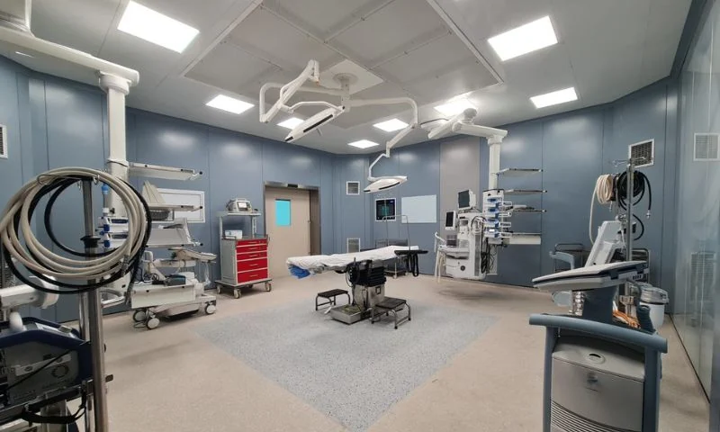
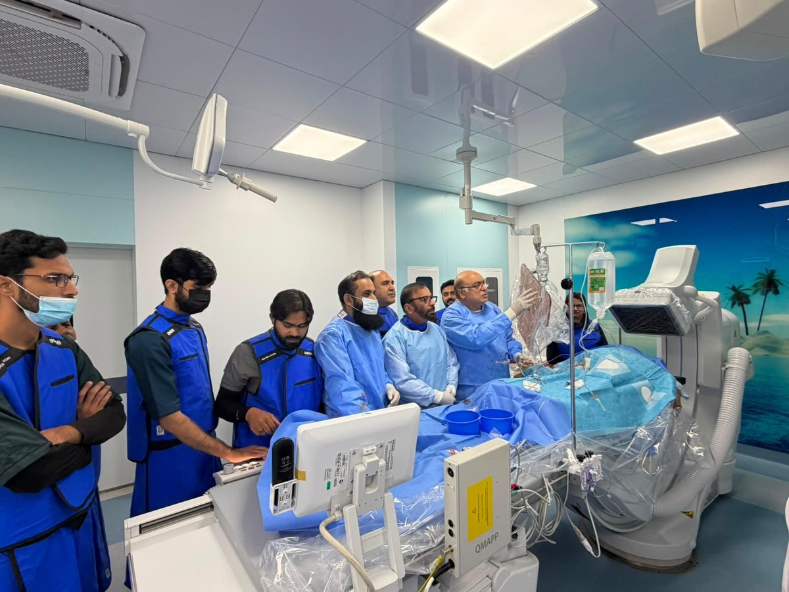

A premier public institute for cardiac treatment, research, and medical education — delivering high-quality, modern, and accessible cardiovascular care to every patient.
Explore ServicesTo become a center of international repute in cardiovascular treatment, research, and education, delivering equitable and state-of-the-art care to patients across Punjab and Pakistan.
To provide compassionate, accessible, and high-quality cardiac healthcare while nurturing future healthcare professionals through cutting-edge education, clinical training, and clinical research.

Chief Minister Punjab
It gives me immense pleasure and satisfaction to see the Jinnah Institute of Cardiology (JIC), Lahore, become a reality. This institute has been one of my cherished dreams, and its inauguration marks an important milestone in our commitment to providing modern, advanced and free cardiac healthcare to the people.
Specialized units spanning from prevention to advanced heart transplants.
24/7 dedicated acute cardiac emergency care equipped with modern resuscitation protocols.
Daily specialist consultations, diagnostic screening, and follow-up clinics.
Coronary angiography, primary PCI, complex stenting, and structural interventions.
Echocardiography (2D/3D/TEE), ETT, Holter monitoring, and vascular Doppler.
A major milestone achieved in public cardiovascular healthcare infrastructure for Punjab.

InaugurationState-of-the-art facility equipped for complex end-stage heart failure surgical management.

Clinical MilestoneFirst Coronary Angiography performed successfully at JIC, Lahore.